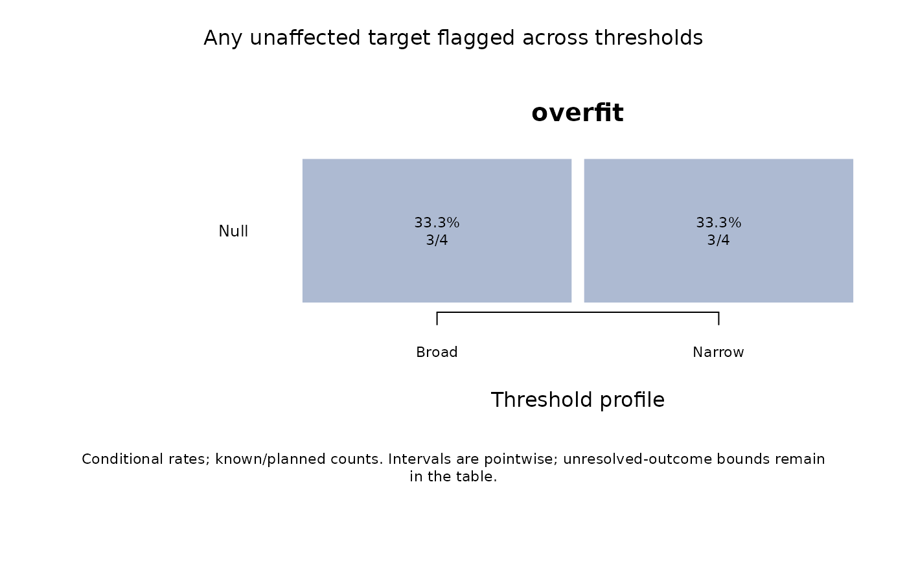

Compare fit-screening thresholds against known simulation truth
Source:R/api-screening-sensitivity.R
mfrm_screening_sensitivity.RdSee how detection and false-flag rates change when you change fit-screening thresholds in a simulation with known truth. Apply specified mean-square bands to saved Infit/Outfit values without refitting models. Keep underfit, overfit and their union separate. Here sensitivity analysis means comparing thresholds; the reported Sensitivity rate means detecting an affected target.
Arguments
- roster
Data frame with
Condition,Replicate,Targetidentifiers and logicalAffected:TRUEdenotes the prespecified departure that the screen is intended to detect. Include every planned target and replication, including failed runs. Within a condition, use the same targets and truth labels in every replication. Put different designs or methods in separate conditions. Identifiers are matched exactly as character labels.- measures
Data frame with
Condition,Replicate,Target,InfitandOutfit. IncludeInfitZSTDandOutfitZSTDwhen requesting the combined ZSTD rule. The selected statistic's columns are required; nonfinite values and omitted rows remain unavailable. Additional source columns, such as numerical readiness, are retained without filtering.- thresholds
Data frame with unique nonempty
Profilelabels and numericLower,Upperbounds satisfying0 < Lower < Upper. Profiles are compared in supplied order, without selecting an optimum.- rule
Nonempty description of the prespecified screen, including its thresholds, comparison family and any selection/refitting procedure.
- statistic
"either"(default) flags Infit OR Outfit;"infit"or"outfit"uses only the specified index.- zstd_cut
NULL(default) uses only mean squares. A positive finite number adds directional ZSTD flags with inclusive boundaries. This is an explicit alternative rule, not a significance calibration. Record the chosen df convention and residual definition inrule.- level
Confidence level for exact binomial Monte Carlo intervals; default 0.95. These describe simulation uncertainty, not an interval for rater severity or a guarantee of screening accuracy.
- ...
Unused by print and summary.
- x, object
An
mfrm_screening_sensitivityobject.
Value
An mfrm_screening_sensitivity object with by_target, by_family,
aligned outcomes, replication-level family_outcomes, source roster
and measures, thresholds and settings. Each result table identifies
Profile, Lower, Upper and Direction; the remaining columns have
the meanings documented by mfrm_screening_performance().
Details
Mean-square boundaries are strict: equality is inside the band.
Missing values use three-valued logic: TRUE OR NA is TRUE, but FALSE OR NA
is NA. The family event counts any affected or any unaffected target once
per independent replication. Correlated raters are not independent trials.
The source roster fixes truth and planned denominators for every profile.
Affected denotes the departure of interest; when comparing directional
screens, an affected-target flag can have the wrong direction for that
departure. Inspect directions together, not just the union's sensitivity.
Thresholds are review heuristics, not universal error-controlled tests. A low mean square describes low residual variability, not poor rater quality or proof of misconduct. ZSTD is sensitive to sample size and its df convention. Selecting a threshold on these results and reporting its same- sample performance is optimistic; use a separately designed validation. Pointwise Monte Carlo intervals are not simultaneous across profiles or conditions. Their overlap is not a paired test of rules applied to the same replications. No automatic exclusion or refitting is performed.
This helper does not qualify the supplied statistics. In particular, ordinary Rasch bands must not be transferred to extended-model posterior- predictive residual summaries that lack the same reference distribution.
References
Linacre, J. M. (2003). Size vs. significance: standardized chi-square fit statistic. Rasch Measurement Transactions, 17(1), 918. https://www.rasch.org/rmt/rmt171n.htm.
Examples
roster <- expand.grid(Condition = "Null", Replicate = 1:4,
Target = c("R1", "R2"), stringsAsFactors = FALSE)
roster$Affected <- FALSE
measures <- roster[c("Condition", "Replicate", "Target")]
measures$Infit <- c(.45, .8, 1.1, NA, .9, 1.4, 1.2, NA)
measures$Outfit <- measures$Infit
bands <- data.frame(Profile = c("Broad", "Narrow"),
Lower = c(.5, .7), Upper = c(1.5, 1.3))
sensitivity <- mfrm_screening_sensitivity(roster, measures, bands,
rule = "Illustrative fixed-rater residual screen; no exclusion/refit")
plot(sensitivity, direction = "overfit")
